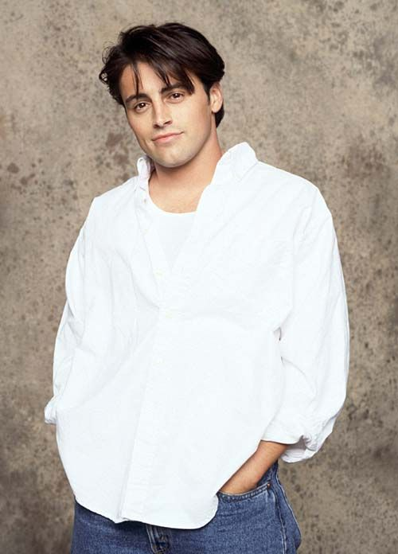

Joey Tribbiani

Joey se caracteriza por ser un mujeriego pero de buen carácter al que le encanta la comida. Ama
especialmente los sándwiches de albóndigas. Cuando le preguntan si renunciaría al sexo por comida, tuvo
problemas y acabó gritando "¡Quiero un sándwich de mujer!". En "The One With the Ride Along", aparece
salvando a Ross de un supuesto disparo, cuando en realidad era su sándwich de albóndigas lo que quería
salvar; el cual estaba cerca de Ross. Más allá de ser mujeriego, a lo largo de la serie se destaca por
ser,
probablemente, el que tiene más cualidades de "buen amigo"; jamás ha roto una promesa y siempre ha sido
fiel
a sus amigos, algo que el resto del grupo, teniendo deslices, no ha podido cumplir del todo. Es algo
idiota,
y sabio en cuestiones de romance, a menudo basándose en su línea "How you doin?" (¿Cómo va eso?) pero
incapaz de tener buenas ideas cuando se plantea una situación. Esto alude al episodio "The One Where
Ross
Dates a Student", cuando Chandler, refiriéndose a Joey, dice "Una chica desnuda y de repente es Rainman"
cuando Joey le sugirió a Ross con el trabajo llamándolo "el más lindo del departamento de paleontología"
comparando la escritura de la nota a la escritura en los ensayos de clase.